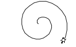
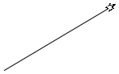
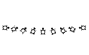
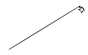
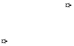
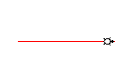
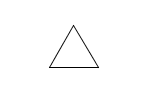
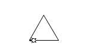

public class Turtle extends Object
A turtles lives in a Terrarium. We imagine that turtles all hold a pen in their mouth. As they walk around
the terrarium, they leave a trail (a series of Track segments) behind them. The turtles can avoid leaving
a track if they pick up their pen.

Turtles understand a limited number of instructions:
|  | move( steps) (a.k.a forward or fd and back or bk) — the turtle will step forward, in the direction that it is currently facing, some number of steps (i.e. pixels). |
|  | turn(degrees) (a.k.a. left or lt and right or rt) — the turtle will turn from its current heading some number of degrees. |
|  | moveTo(x, y) (a.k.a. to) — the turtle will move from its current location to the coordinates given, without changing its heading. |
|  | teleport(x, y) (a.k.a. tp) — the turtle will teleport (like in Star Trek) from its current location to the new coordinates, without changing its heading and without allowing the pen to drag between locations. |
|  | penColor(color) (a.k.a. pc) — the turtle will change the color of its pen (initially the pen is black) |
| penWidth(width) (a.k.a. pw) — the turtle will change the width of its pen stroke (measured in pixels) | |
|  | hide() (a.k.a. ht) — the turtle will hide itself (but remain at its current location and heading) |
|  | show() (a.k.a. st) — the turtle, if hidden, will show itself again |
| Modifier and Type | Class and Description |
|---|---|
static class |
Turtle.UnderTheShell
The parts of the turtle that are "under the shell" are not meant to be used by students.
|
| Modifier and Type | Field and Description |
|---|---|
static double |
DEFAULT_HEADING_IN_DEGREES
|
static boolean |
DEFAULT_HIDDEN
false |
static Color |
DEFAULT_PEN_COLOR
|
static boolean |
DEFAULT_PEN_DOWN
true |
static float |
DEFAULT_PEN_WIDTH
1.0 pixels
|
static double |
EAST
0°
|
static double |
NORTH
270°
|
static double |
SOUTH
90°
|
protected static Turtle.UnderTheShell |
UNDER_THE_SHELL
|
static double |
WEST
180°
|
| Constructor and Description |
|---|
Turtle()
Construct a turtle in the default terrarium
|
Turtle(Terrarium terrarium)
Construct a turtle in a custom terrarium
|
| Modifier and Type | Method and Description |
|---|---|
void |
back(double steps)
Alias for
move(double) |
void |
bk(double steps)
Alias for
back(double) |
void |
draw(Graphics2D context,
Terrarium.UnderTheSurface key)
Draw the turtle
|
protected void |
drawIcon(double x,
double y,
double headingInRadians,
Graphics2D context)
|
void |
fd(double steps)
Alias for
forward(double) |
void |
forward(double steps)
Alias for
move(double) |
double |
getHeadingInDegrees() |
double |
getHeadingInRadians() |
Color |
getPenColor() |
protected BasicStroke |
getPenStroke()
|
double |
getPenWidth() |
Terrarium |
getTerrarium() |
double |
getX() |
double |
getY() |
void |
hd(double heading)
Alias for
head(double) |
void |
head(double heading)
Turn the turtle to a particular heading
|
void |
hide()
Hide the turtle
|
void |
home()
Reset the turtle to its home position
|
void |
ht()
Alias for
hide() |
boolean |
isHidden() |
boolean |
isPenDown() |
void |
left(double angle)
Alias for
turn(double) |
void |
lt(double angle)
Alias for
left(double) |
void |
move(double steps)
Move the turtle in the direction of its current heading
|
void |
moveTo(double x,
double y)
Move the turtle to a particular location
|
void |
pc(Color color)
Alias for
penColor(Color) |
void |
pd()
Alias for
penDown() |
void |
penColor(Color color)
Set the color of the turtle's pen
|
void |
penDown()
Lower the turtle's pen, causing it to leave a trail
|
void |
penUp()
Lift the turtle's pen up, causing it not to leave a track
|
void |
penWidth(double width)
Set the width of the turtle's pen
|
void |
pu()
Alis for
penUp() |
void |
pw(double width)
Alias for
penWidth(double) |
void |
right(double angle)
Alias for
turn(double) |
void |
rt(double angle)
Alias for
right(double) |
void |
setTerrarium(Terrarium terrarium)
Move the turtle to another terrarium
|
void |
show()
Show the turtle (if it was hidden)
|
void |
st()
Alias for
show() |
void |
teleport(double x,
double y)
Move the turtle instantaneously to a particular location
|
void |
to(double x,
double y)
Alias for
moveTo(double, double) |
void |
tp(double x,
double y)
Alias for
teleport(double, double) |
void |
turn(double angle)
Turn the turtle from its current heading
|
protected static final Turtle.UnderTheShell UNDER_THE_SHELL
public static final double NORTH
public static final double SOUTH
public static final double EAST
public static final double WEST
public static final double DEFAULT_HEADING_IN_DEGREES
public static final Color DEFAULT_PEN_COLOR
public static final float DEFAULT_PEN_WIDTH
public static final boolean DEFAULT_PEN_DOWN
truepublic static final boolean DEFAULT_HIDDEN
falsepublic Turtle()
public Turtle(Terrarium terrarium)
terrarium - to house the turtlepublic double getX()
public double getY()
public double getHeadingInDegrees()
public double getHeadingInRadians()
public Color getPenColor()
public double getPenWidth()
protected BasicStroke getPenStroke()
public boolean isPenDown()
true if the pen is down, false otherwisepublic boolean isHidden()
true if the turtle is hidden, false otherwisepublic Terrarium getTerrarium()
public void setTerrarium(Terrarium terrarium)
terrarium - to house the turtlepublic void bk(double steps)
back(double)steps - in pixelspublic void back(double steps)
move(double)steps - in pixelspublic void fd(double steps)
forward(double)steps - in pixelspublic void forward(double steps)
move(double)steps - in pixelspublic void move(double steps)
Move the turtle in the direction of its current heading
A positive value for steps is interpreted as forward movement and a negative value as backward
movement
steps - in pixelspublic void to(double x,
double y)
moveTo(double, double)x - coordinatey - coordinatepublic void moveTo(double x,
double y)
Move the turtle to a particular location
The turtle moves directly to the window coordinates (x, y). Note that the origin of
the wind ow is in the top, left corner and that, while the X-axis increases from left to right, the Y-axis
increases from to to bottom.
If the turtle's pen is currently down, the move will create a track from the old location to the new location.
x - coordinatey - coordinatepublic void tp(double x,
double y)
teleport(double, double)x - coordinatey - coordinatepublic void teleport(double x,
double y)
Move the turtle instantaneously to a particular location
The turtle moves directly to the window coordinates (x, y). Note that the origin of
the wind ow is in the top, left corner and that, while the X-axis increases from left to right, the Y-axis
increases from to to bottom.
No track is left by a teleportation.
x - coordinatey - coordinatepublic void home()
Reset the turtle to its home position
The turtle's home position is at the center of the window, heading EAST
public void rt(double angle)
right(double)angle - in degreespublic void right(double angle)
turn(double)angle - in degreespublic void lt(double angle)
left(double)angle - in degreespublic void left(double angle)
turn(double)angle - in degreespublic void turn(double angle)
Turn the turtle from its current heading
A positive angle is interpreted as a right turn and a negative angle is a left turn. This is mildly
surprising if you know about the unit circle, but is because the Y-axis of the window increases from top to bottom,
which results in a mirrored unit circle around the X-axis, with 90° at the SOUTH and270° at the
NORTH
angle - in degreespublic void hd(double heading)
head(double)heading - in degreespublic void head(double heading)
Turn the turtle to a particular heading
Note that, because the Y-axis of the window increases from top to bottom, the usual angles of the unit circle
have been mirrored around the X-axis, with 90° at the SOUTH and 270%deg; at the NORTH.
Convenience constants have been provided for the cardinal directions.
heading - [0..360) in degreespublic void pu()
penUp()public void penUp()
public void pd()
penDown()public void penDown()
public void pc(Color color)
penColor(Color)color - to usepublic void penColor(Color color)
Set the color of the turtle's pen
Color values are given as Color values. Color has a number of helpful constants like
Color.GREEN or Color.GREEN. Custom colors can also be constructed. Refer to the
java.awt.Color
API documentation more details (including how to create transparent colors!)
color - to usepublic void pw(double width)
penWidth(double)width - in pixelspublic void penWidth(double width)
width - in pixelspublic void ht()
hide()public void hide()
Hide the turtle
Hiding the turtle causes it to become invisible — it can still be moved and create tracks, but the turtle itself is not visible
public void st()
show()public void show()
public void draw(Graphics2D context, Terrarium.UnderTheSurface key)
Draw the turtle
May only be called by Terrarium and its subclasses, enforced by Terrarium.UnderTheSurface
context - for drawing commandskey - to authenticate "Terrarium-iality"protected void drawIcon(double x,
double y,
double headingInRadians,
Graphics2D context)
Copyright © 2018. All rights reserved.